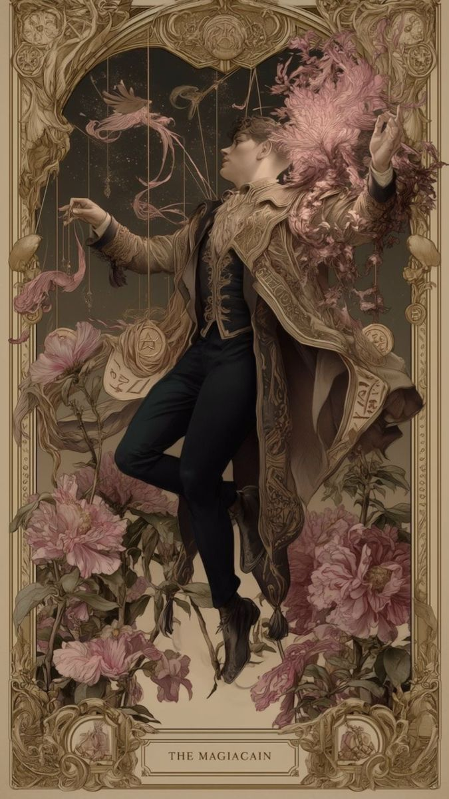
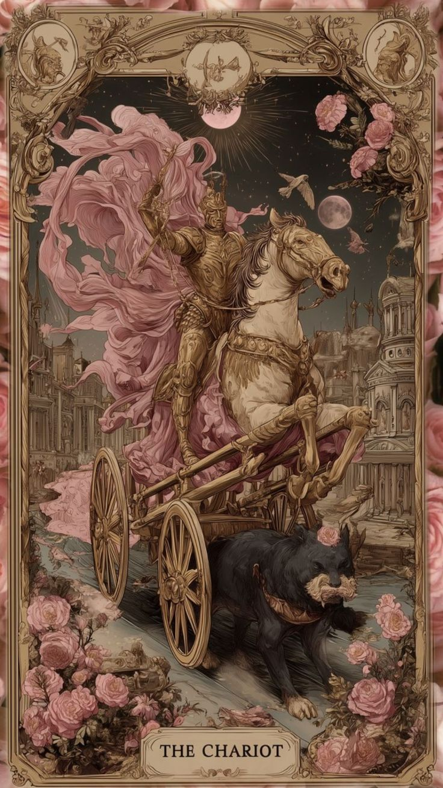
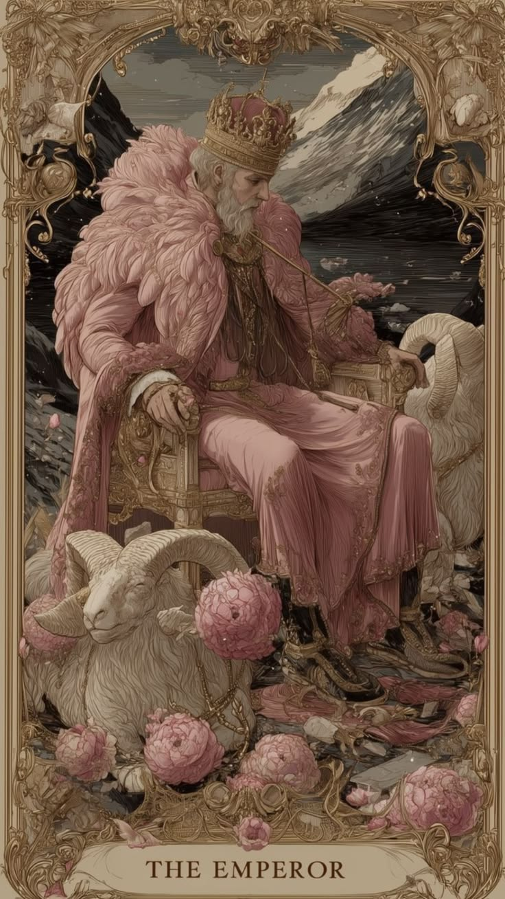

Добро пожаловать
Пусть это пространство станет для вас безопасной гаванью, где можно задать любой, даже самый «глупый» на первый взгляд вопрос, поделиться сокровенным раскладом и получить мудрый совет.

Девочки, помогите, выпал маг. Расклад на любовь.
Дорогие! Всем добрый день, такая ситуация, делала расклад на любовь, расклад обычный, три карты, первый выпал маг, не могу понять, что он тут значит, рядом четверка мечей и туз пентаклей

Двойка мечей в раскладе на работу, не могу понять
Всем добрый день! Очень нужна ваша помощь. Такая ситуация: сейчас активно ищу новую работу, есть пара предложений, но я никак не могу определиться, да и внутри какое-то странное напряжение. Решила разложить карты, чтобы понять перспективы. Делала обычный расклад на работу, на три карты. На первой позиции выпала Двойка Мечей. Честно, я в ступоре, обычно эта карта у меня ассоциируется с закрытостью или тупиком, а тут карьера. Не могу понять, что она тут значит — это про мой выбор, про скрытые конфликты на новом месте или вообще про то, что мне нужно просто остановиться и подождать? Помогите с трактовкой, пожалуйста! Вторая карта туз мечей, а третья - солнце!

Император на деньги, что значит?
Тарологи, помогите! Всем добрый вечер, нужен ваш совет по картам. Такая ситуация, мы с мужем планируем достаточно крупную финансовую сделку, связанную с недвижимостью (взятие ипотеки и оформление документов), и я очень переживаю, не хочу прогореть. Решила сделать расклад, расширенный (финансовую диагностику). На второй позиции выпал Иерофант (Пятый Аркан). Я понимаю, что это карта традиций, обучения и каких-то правил, но как её применить к деньгам? Это значит, что сделка будет безопасной, если всё делать официально по закону, или она советует мне обратиться к юристу/более опытному человеку за консультацией? Не могу понять, что он тут значит, помогите с трактовкой!